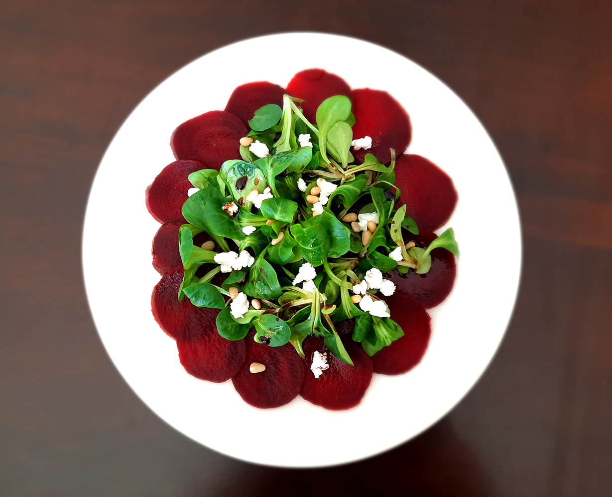

bieten carpaccio

Bereidingsduur: 15 minuten
Aantal personen: 2
Ingrediënten:
2 gekookte rode bieten
25 gram geitenkaas
40 gram veldsla
2 handjes pijnboompitten
2 eetlepels olijfolie
naar wens balsamicoazijn
2 gekookte rode bieten
25 gram geitenkaas
40 gram veldsla
2 handjes pijnboompitten
2 eetlepels olijfolie
naar wens balsamicoazijn
Instructies:
1. Snijd de bieten heel dunne plakjes. Verdeel deze plakjes over twee borden.
2. Verdeel de balsamicoazijn, olijfolie en sla over de bieten.
3. Verkruimel de geitenkaas over de borden en bestrooi met de pijnboompitten.
1. Snijd de bieten heel dunne plakjes. Verdeel deze plakjes over twee borden.
2. Verdeel de balsamicoazijn, olijfolie en sla over de bieten.
3. Verkruimel de geitenkaas over de borden en bestrooi met de pijnboompitten.